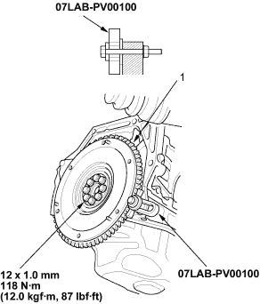

Special Tools Required
Ring gear holder 07LAB-PV00100
- Remove the transmission (see page 13-5).
- Remove the eight flywheel bolts, then separate the flywheel from the crankshaft flange. After installation, tighten the bolts in a criss-cross pattern.

- Inspect ring gear teeth for wear or damage
- Install the transmission (see page 13-10).